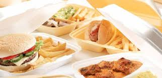

About Us
Born in 1915 under the keen and watchful
eye of Don "The Don" Ferrari, we have grown
and grown in our 100 glorious years. An idea
to make
the people of Dublin see the real quality
that Italian fast food cuisine has to offer,
Ferrari's prides itself on standing out from the crowd.
Our famous customers include Bono, Robbie Keane
and Enda Kenny.